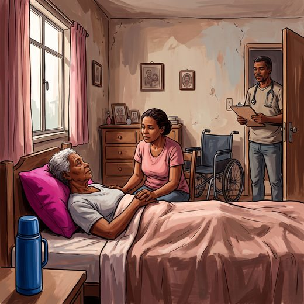

Consulta rápida à beira do leito
Condutas, doses e interações.
Referências da aula · 5
- Avelino-Silva TJ, et al. Geriatric syndromes and mortality among hospitalized older adults (CHANGE). JAMA Netw Open. 2026;9(1):e2555740. doi:10.1001/jamanetworkopen.2025.55740. PMID 41591773.PubMedDOI
- Moraes EN, Marino MCA, Santos RR. Principais síndromes geriátricas. Rev Med Minas Gerais. 2010;20(1):54-66.
- Ribeiro CA, Silva DAM, Rizzo LA, Ventura MM. Frequência da síndrome de imobilidade em uma enfermaria de geriatria. Geriatria & Gerontologia. 2011;5(3):136-9.
- Siqueira AB, Cordeiro RC. Imobilidade. In: Ramos LR, Toniolo Neto J, organizadores. Guia de Medicina Ambulatorial e Hospitalar UNIFESP-EPM: Geriatria e Gerontologia. Manole; 2005. cap. 21.
- Kortebein P, Ferrando A, Lombeida J, Wolfe R, Evans WJ. Effect of 10 days of bed rest on skeletal muscle in healthy older adults. JAMA. 2007;297(16):1772-4. PMID 17456818. doi:10.1001/jama.297.16.1772-b.PubMedDOI